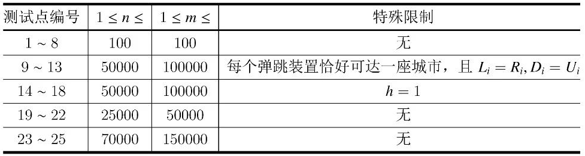

跳蚤国有 $n$ 座城市，分别编号为 $1$ ~ $n$，$1$ 号城市为首都。所有城市分布在一个 $w \times h$ 范围的网格上。每座城市都有一个整数坐标 $(x,y) (1 \le x \le w，1 \le y \le h)$，不同城市的坐标不相同。
在跳蚤国中共有 $m$ 个弹跳装置，分别编号为 $1$ ~ $m$，其中 $i$ 号弹跳装置位于 $p_i$ 号城市，并具有参数 $t_i, L_i,R_i,D_i,U_i$。利用该弹跳装置，跳蚤可花费 $t_i(t_i>0)$ 个单位时间，从 $p_i$ 号城市跳至坐标满足 $L_i \le x \le R_i，D_i \le y \le U_i(1 \le L_i \le R_i \le w，1 \le D_i \le U_i \le h)$ 的任意一座城市。需要注意的是，一座城市中可能存在多个弹跳装置，也可能没有弹跳装置。
由于城市间距离较远，跳蚤们必须依靠弹跳装置出行。具体来说，一次出行将经过若干座城市，依次经过的城市的编号可用序列 $a_0,a_1, \cdots ,a_k$ 表示；在此次出行中，依次利用的弹跳装置的编号可用序列 $b_1,b_2, \cdots ,b_k$ 表示。其中每座城市可在序列 $\{a_j\}$ 中出现任意次，每个弹跳装置也可在序列$\{b_j\}$中出现任意次，且满足，对于每个 $j(1 \le j \le k)$，编号为 $b_j$ 的弹跳装置位于城市 $a_{j-1}$，且跳蚤能通过该弹跳装置跳至城市 $a_j$。我们称这是一次从城市 $a_0$ 到城市 $a_k$ 的出行，其进行了 $k$ 次弹跳，共花费 $\sum^k_{i=1}t_{b_i}$ 个单位时间。
现在跳蚤国王想知道，对于跳蚤国除首都（$1$ 号城市）外的每座城市，从首都出发，到达该城市最少需要花费的单位时间。跳蚤国王保证，对每座城市，均存在从首都到它的出行方案。
第一行包含四个整数 $n,m,w,h$，变量的具体意义见题目描述。
接下来 $n$ 行，第 $i$ 行包含两个整数 $x_i,y_i$，表示 $i$ 号城市的坐标。
接下来 $m$ 行，第 $i$ 行包含六个整数 $p_i,t_i, L_i,R_i,D_i,U_i$，分别表示 $i$ 号弹跳装置所在的城市编号、弹跳所需的时间、可到达的矩形范围。这些整数的具体意义见题目描述。
输出 $n-1$行，第 $i$行包含一个整数，表示从跳蚤国首都到 $i+1$号城市最少需要花费的单位时间。
5 3 5 5 1 1 3 1 4 1 2 2 3 3 1 123 1 5 1 5 1 50 1 5 1 1 3 10 2 2 2 2
50 50 60 123
【数据范围与提示】
对于所有测试点和样例满足：
$1 \le n \le 70000，1 \le m \le 150000，1 \le w,h \le n，1 \le t_i \le 10000$。
每个测试点的具体限制见下表。

请注意，本题的内存限制为 128MB。
 Comet OJ
Comet OJ